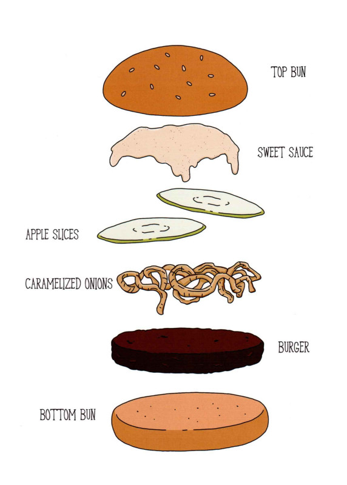

The Garden of Eden Burger

Description
This burger is topped with caramelized onions, green apple slices and a maple-ginger-cinnamon
yogurt sauce. Do you remember what we said about fruit and burgers? Well, we weren't kidding.
A green apple thinly sliced and gently heated works well in grilled cheese sandwiches too. You
can try it with other things, but don't go crazy cause then you'll be the kook who puts apples
on everything and no one will take you seriously.
Ingredients
- 1 cup plain yogurt
- 1 teaspoon cinnamon
- 1/4 teaspoon ginger
- 1/4 teaspoon nutmeg
- 1 tablespoon maple syrup
- 1 tablespoon butter
- 1 Vidalia onion, halved and sliced
- 1 green apple
- 1 pound ground beef
- Salt and pepper
- 4 Buns
Steps
-
Mix the yogurt, cinnamon, ginger, nutmeg and maple syrup together
in a small bowl with a pinch of salt. Chill until everything else is done.
-
Melt the butter in a wide frying pan over medium-low heat. Add the sliced
onion and stir to coat. Cook over fairly low heat, stirring occasionally,
until the onion is very soft and a deep, sticky golden-brown,
about 20 to 30 minutes.
-
Core your apple. Slice into thin rounds you want 2 per burger
-
Form 4 patties, season both sides with salt and pepper. Cook as you normally would.
Alongside your patties, on your grill, or in your skillet, heat your apple slices
for 4 or 5 minutes, turning once.
-
BUILD YOUR BURGER: Bun, burger, caramelized onions, apple slices,
lots of sauce, top bun. Enjoy your fall from grace.
Return to Recipes